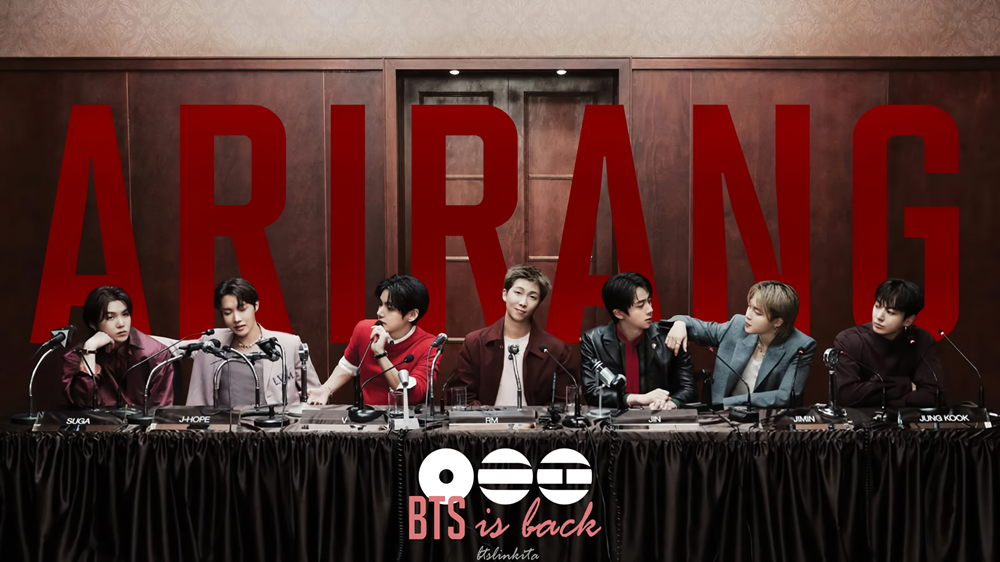

Biografía
BTS, también conocido como Bangtan Sonyeondan, es un grupo de música surcoreano formado por siete miembros: RM, Jin, Suga, J-Hope, Jimin, V y Jungkook.
El grupo debutó en 2013 bajo la compañía Big Hit Entertainment y rápidamente ganó popularidad tanto en Corea del Sur como a nivel internacional.
BTS es conocido por su música que abarca diversos géneros, incluyendo pop, hip-hop y R&B.
Sus letras a menudo abordan temas como la juventud, la salud mental, el amor propio y la crítica social, lo que ha resonado con una amplia audiencia en todo el mundo.
A lo largo de su carrera, BTS ha lanzado numerosos álbumes exitosos y ha ganado varios premios, incluyendo premios Billboard y Grammy.
Además de su éxito musical, BTS también es conocido por su impacto cultural y social, utilizando su plataforma para promover mensajes positivos y apoyar causas benéficas.

Gira Mundial "Arirang"
Este año, BTS está realizando una gira mundial llamada "Arirang", que incluye una parada en Argentina.
Durante esta gira, el grupo ofrece conciertos en varias ciudades alrededor del mundo, mostrando su música y su energía en vivo a millones de fans.
